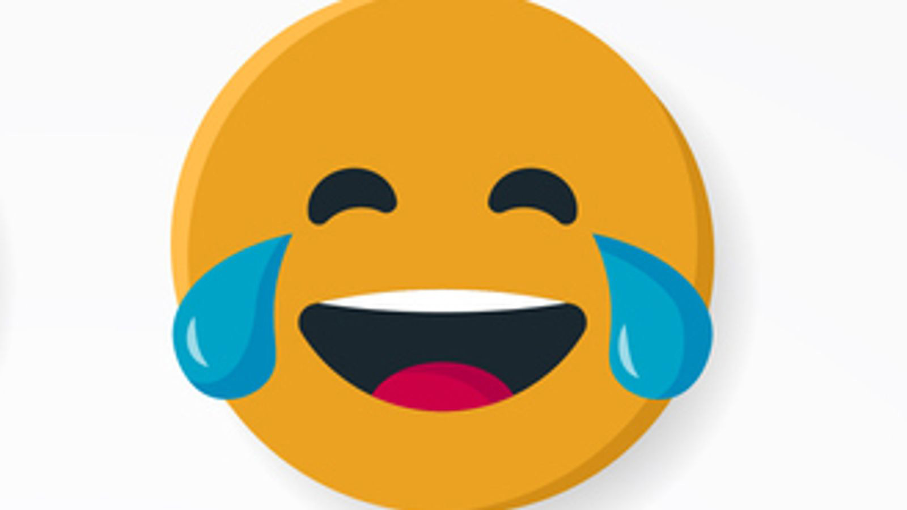

2021’s Trickiest Words to Pronounce

Words: 396
Do you know how to pronounce these words?
This list was commissioned six years ago by Babbel, a language-learning platform. The company has headquarters in Berlin and New York. Another US company, which produces subtitles for live TV, did a survey to see which words television presenters and newsreaders are pronouncing incorrectly.
Some of the words that made it onto the list in 2021 are as follows: Omicron (the virus), Tsitsipas (the Greek tennis player), and cryptocurrency, Dogecoin.
Esteban Touma, a stand-up comedian and teacher for Babbel Live, said that newscasters in the US have struggled with 2021’s new words and names.
Here are a few of the words and names:
- Cheugy (CHOO-gee/): A Generation Z term to mock outdated and unfashionable things, or someone who is trying too hard. It is often used to poke fun at Millennials.
- Chipotle (chih-POHT-lay/UK - ɪˈpəʊt.leɪ/US - tʃɪˈpoʊt.leɪ/): The US fast food chain started a viral trend in 2021 by challenging people to pronounce this name.
- Dalgona (tal-goh-NAH): A Korean treat made with melted sugar and baking soda, as seen in the hit show Squid Game.
- Dogecoin (DOHJ-coin): Despite having an image of a dog as its logo, the cryptocurrency’s name is not so straightforward.
- Eilish (EYE-lish): She may be one of the world’s biggest stars, but Billie Eilish’s name is still causing a problem for some TV presenters.
- Ethereum (ih-THEE-ree-um): Another cryptocurrency with another tricky name.
- Glasgow (GLAHZ-go/UK - ɡlɑːz.ɡəʊ/US - ˈɡlæz.ɡoʊ/): This may seem a strange one but the COP26 host city may be a challenge for some people not from the UK, with President Biden and Barack Obama struggling to say it correctly.
- Kelce (KELs): NFL player Jason Kelce of the Philadelphia Eagles said that his teammates and the media had been mispronouncing his name for years.
- Omicron (AH-muh-kraan/OH-mee-kraan/UK - əʊˈmaɪ.kron/US - ˈoʊ.mɪ.krɑːn/): A new variant of the COVID-19 first identified in November. It is named in keeping with the WHO’s system of identifying variants with Greek letters. The strain is pronounced differently in the US and the UK.
- Shein (SHEE-in): A popular Chinese “fast fashion” company.
- Stafanos Tsisipas (STEH-fuh-nos TSEE-tsee-pas): The Greek tennis player, ranked fourth in the world, is one of the game’s brightest young stars and reached the French Open final in June.
- Yassify (YEAH-sih-fai): A trend in which multiple beauty filters are applied to famous pictures or portraits for comic effect.
Difficult Words
- Subtitles Captions displayed at the bottom of a TV screen that translate the dialogue or narrative, e.g., films in foreign languages with English subtitles.
- Newsreaders People who read news bulletins on TV or other social media platforms.